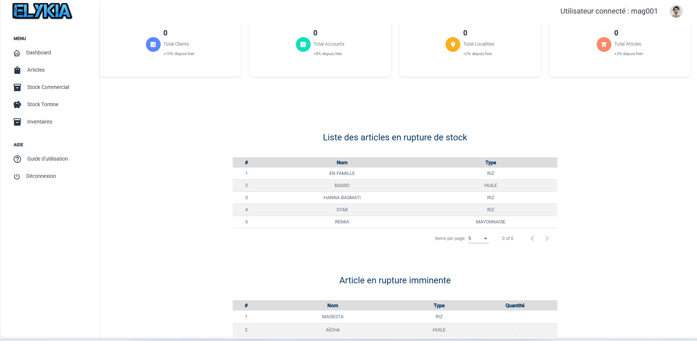
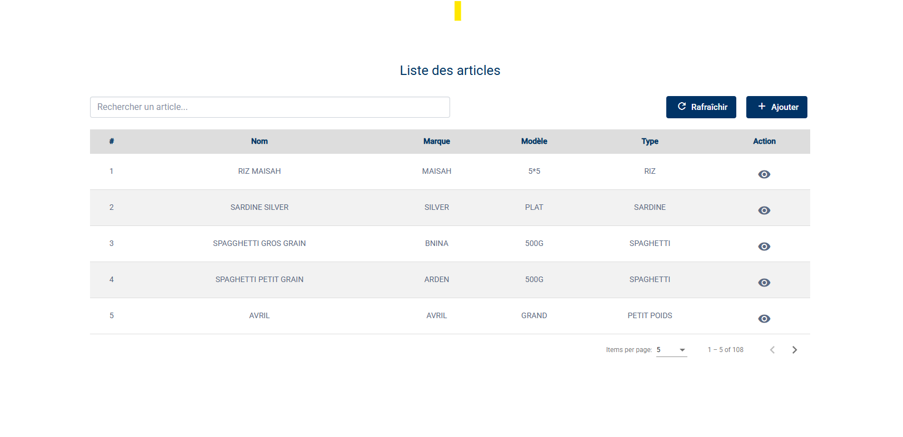
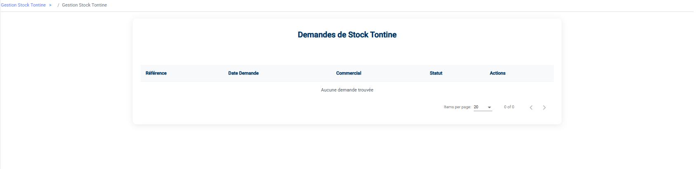
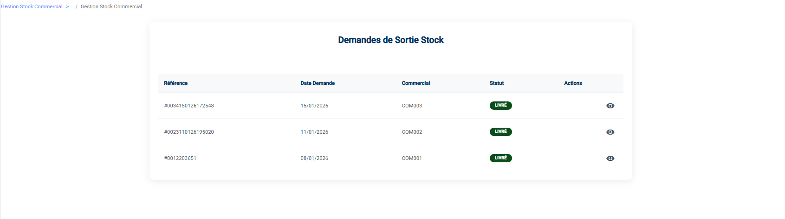
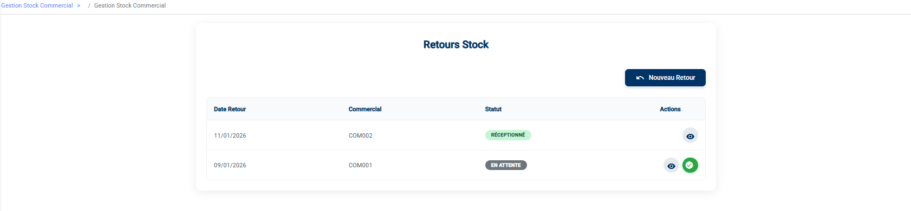

Guide Utilisateur - Profil Storekeeper
Ce document est une compilation de la documentation pour impression.
\newpage
Bienvenue dans votre Espace Magasinier
Bonjour et bienvenue dans le guide dédié au Magasinier.
Votre rôle est essentiel : vous êtes le gardien du temple. C'est vous qui assurez que le stock physique correspond à ce qui est dans l'ordinateur, qui réceptionnez les marchandises et qui servez les commerciaux pour qu'ils puissent vendre.
Ce guide est là pour vous aider à maîtriser vos outils au quotidien.
Votre Tableau de Bord (Dashboard)
Dès que vous vous connectez, vous arrivez sur votre Tableau de Bord. C'est votre tour de contrôle. Il vous dit tout de suite s'il y a le feu ou si tout va bien.

1. La Vue d'Ensemble
Les cartes en haut vous donnent les grands chiffres : * Total Articles : Combien de références différentes gérons-nous ? * D'autres indicateurs (Clients, etc.) pour info.
2. Les Alertes Stock (Votre priorité !)
C'est la partie la plus importante pour vous. Elle vous crie ce qu'il faut faire :
- Rupture de stock (Rouge) : Ces produits sont à 0. Il n'y en a plus ! Il faut réapprovisionner d'urgence.
- Rupture imminente (Orange) : Attention, le stock est bas. Préparez une commande fournisseur.
Vous avez vérifié les alertes ? Passons à la gestion de votre catalogue.
\newpage
Gérer le Catalogue (Articles)
Le menu Articles est votre bible. C'est ici que sont listés tous les produits que l'entreprise vend.
1. Consulter le Catalogue
L'écran principal vous montre tout ce qui existe en rayon. Pour chaque produit, vous voyez son Nom, sa Marque, son modèle, et son Type.
Astuce : Utilisez la barre de recherche en haut pour trouver un produit rapidement par son nom.

2. Ajouter un Nouveau Produit
Vous avez reçu une nouvelle référence ? Il faut la créer dans le système.
- Cliquez sur le bouton Ajouter.
- Remplissez la fiche d'identité du produit :
- C'est quoi ? (Nom, Marque, Modèle).
- Quel type ? (Moto, TV...).
- Combien ça coûte ? (Prix d'achat et Prix de vente). > Règle d'or : Le Prix de vente doit toujours être supérieur au Prix d'achat !
- Quand s'inquiéter ? (Point de commande) : C'est le seuil en dessous duquel l'alerte "Stock bas" se déclenchera.
- Cliquez sur Valider.

3. Mettre à jour un produit
Un prix a changé ? Une erreur de saisie ? Dans la liste, utilisez les boutons d'action à droite : * Le Crayon pour modifier. * L'Œil pour voir tous les détails. * La Corbeille pour supprimer (Attention, ne supprimez pas un article qui a déjà du stock ou des ventes !).
Votre catalogue est à jour. Voyons maintenant comment faire entrer et sortir la marchandise.
\newpage
Inventaires et Approvisionnements
C'est le cœur de votre métier : s'assurer que le stock est juste et bien rempli.
1. Faire entrer de la marchandise (Approvisionnement)
Le camion du fournisseur est là ? Il faut enregistrer ce qui rentre.
- Cliquez sur le bouton + Entrées.
- Le formulaire s'ouvre :
- Quoi ? Sélectionnez les articles reçus dans la liste.
- Combien ? Tapez la quantité exacte que vous avez comptée au déchargement.
- Cliquez sur Valider l'entrée (Icône bleue).
Le stock augmente instantanément.

2. Faire un Inventaire (L'Heure de Vérité)
Régulièrement, il faut vérifier que le stock de l'ordinateur correspond au stock réel de l'entrepôt.
a. Lancer l'opération
Cliquez sur Créer un inventaire. Le système prend une "photo" du stock théorique à cet instant précis.
b. Compter sur le terrain
- Imprimer : Cliquez sur Télécharger PDF. C'est votre feuille de comptage.
- Compter : Allez dans l'entrepôt avec votre feuille et comptez physiquement chaque article.
- Conseil de pro : Ne regardez pas les quantités de l'ordinateur avant de compter, pour ne pas être influencé.
c. Saisir les résultats
Revenez devant l'écran : 1. Cliquez sur Saisir quantités physiques. 2. Remplissez la colonne Quantité Physique avec vos chiffres. * Le système vous montre tout de suite les écarts en couleur (Rouge = Manquant, Vert = Surplus). 3. Cliquez sur Soumettre les quantités.

3. Clôturer (Pour le Gestionnaire)
Cette partie est souvent réservée au Gestionnaire, mais il est bon que vous sachiez ce qui se passe.
Une fois votre comptage terminé, le Gestionnaire va : 1. Analyser les écarts (Pourquoi il manque 2 laits ?). 2. Réconcilier : Ajuster le stock informatique pour qu'il colle à votre comptage réel. 3. Clôturer : Valider l'inventaire. C'est fini pour ce mois-ci !

Votre stock central est carré. Voyons maintenant comment servir les commerciaux.
\newpage
Le Stock Tontine
Le principe est exactement le même que pour le Stock Commercial, mais attention : ce sont des stocks séparés !
Ce menu concerne uniquement les marchandises destinées aux contrats de Tontine (livraisons de fin d'année).
1. Livrer pour la Tontine
Allez dans Stock Tontine > Demandes Sortie.
- Comme pour le stock commercial, vous ne voyez que les demandes Validées par le manager.
- Préparez les lots tontine.
- Cliquez sur le Camion pour livrer au commercial qui ira distribuer aux clients.

2. Retours Tontine
Si une livraison tontine échoue et que la marchandise revient : 1. Allez dans Stock Tontine > Retours. 2. Vérifiez le matériel. 3. Validez pour le remettre dans votre stock Tontine central.
Voilà, vous maîtrisez maintenant tous les mouvements de stock de l'entrepôt !
\newpage
Servir les Commerciaux (Stock Commercial)
Les commerciaux ont besoin de marchandises pour aller vendre. C'est vous qui les approvisionnez via ce menu.
1. Livrer un Commercial (Demandes Sortie)
Quand un commercial (ou le manager) fait une demande de matériel, c'est ici qu'elle arrive.
La Règle d'Or de la Visibilité
Important : Vous ne voyez dans votre liste QUE les demandes qui ont été VALIDÉES par un Manager. Si un commercial vous dit "J'ai fait une demande" mais que vous ne la voyez pas, c'est qu'elle est encore en attente de validation chez le patron.
Comment livrer ?
- Allez dans Stock Commercial > Demandes Sortie.
- Repérez la demande (elle a le statut vert Validé).
- Préparez physiquement la marchandise.
- Quand vous remettez le matériel au commercial, cliquez sur le bouton Livrer (le petit camion bleu).
Hop ! La marchandise sort de votre stock et passe sous la responsabilité du commercial.

Créer une demande vous-même
Parfois, c'est vous qui initiez la demande pour le commercial (s'il est devant vous). 1. Cliquez sur Nouvelle Demande. 2. Choisissez le commercial et les articles. 3. Envoyez. (Elle devra quand même être validée par un manager avant que vous puissiez la livrer !).

2. Réceptionner les Retours
Parfois, les commerciaux ramènent du matériel (invendus, fin de journée). Il faut le remettre en stock.
- Allez dans Stock Commercial > Retours.
- Vous voyez la liste des retours déclarés.
- Vérifiez physiquement le matériel rapporté.
- Si tout est là, cliquez sur le bouton Valider (la coche verte).
Les articles réintègrent immédiatement votre stock central.

Vous savez gérer les flux avec les commerciaux. C'est la même chose pour la Tontine.
\newpage